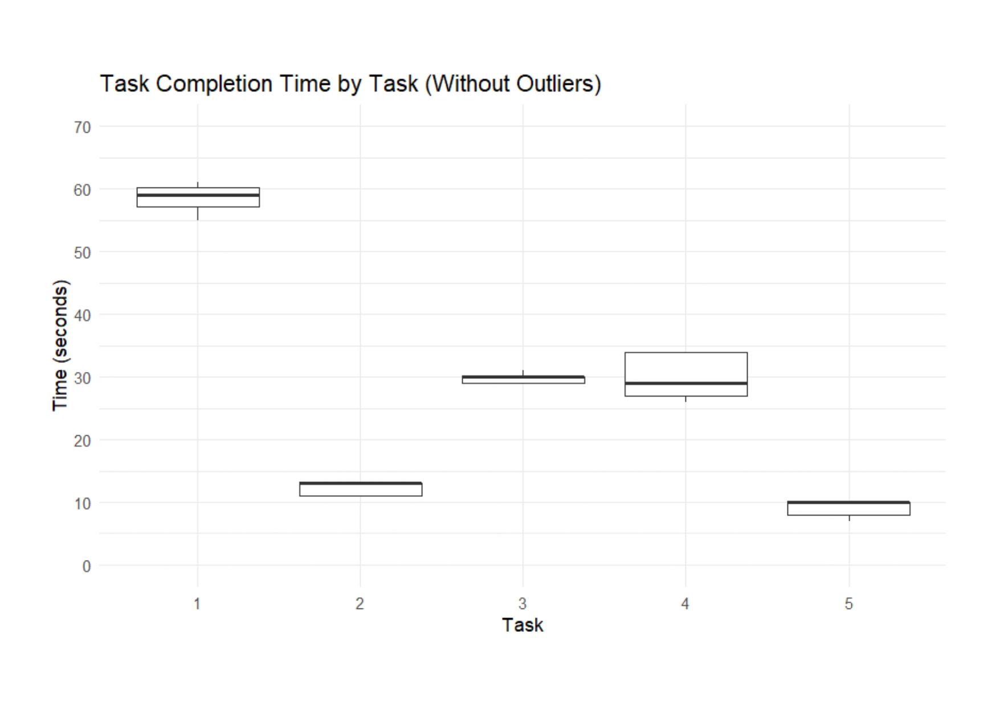

Usability Test Report
Overview
In total, we had 5 test persons of different genders and ages. Each person completed five timed tasks. They were then interviewed and lastly completed a SUS survey. The interview questions and tasks can be seen in the Usability Test Plan.
SUS Scores
| User | Score |
|---|---|
| User 1 | 85 |
| User 2 | 72.5 |
| User 3 | 90 |
| User 4 | 80 |
| User 5 | 77.5 |
| Overall | 81 |
Task Completion Times
Major Takeaways from Interviews
- Search functionality needs improvement: Fix scrolling bugs and add a clear way to reset search terms (e.g. replace the search icon with "X").
- Post order issues: Make sure newly added posts are consistently visible and follow a logical order.
- Improve user interaction: Add features to view likes, users you follow, and profiles to make the app feel more interactive and social.
- Simplify account creation: Explain optional fields like the avatar URL and make sure the process is intuitive.
- Perfect design and layout: Users appreciate the unique design but expect smoother functionality across all main pages.
Changes after the Tests
- Ordered posts by their ID, so that the latest post is on top.
- Created a page to view posts from followed users.
- Created a page to display all the liked posts.
- Included image upload for the profile and posts.
- Added a view in the profile for your own posts.
- Posts now don’t get cut off at the bottom of the screen.
- Search function includes a button change on toggle to make it more intuitive.
- Removed the second button on the sign-up and login page. Instead, there is now a clickable link at the bottom.